Open a Personal Testflight⌁
Introduction⌁
If you have an Apple Developer account and have built xDrip4iOS for personal use, then you can also take advantage and distribute the app to a smaller number of users via your own personal TestFlight without the need for Apple review/approval.
Please note that this is not the same as opening a public Testflight link for external testing with up to 10,000 users. This would need Apple Review approval and could result in your app being suspended as there is already one official Testflight release for xDrip4iOS.
xDrip4iOS is a community-based project and opening a personal Testflight test and sharing it with some users from the community is a great thing to do. Plus you'll be helping out people who don't have access to a Mac and an Apple Developer Account.
The way you do this is to basically to open a private closed-circle test for a maximum of 100 users, each of which will need to share with you their Apple ID email address so that you can send them the invitation via e-mail.
The basic steps are:
- archive and upload the app to App Store Connect
- invite another user to become a Customer Support Agent for your apps
- once that user has accepted the invitation, give that user access to the app
- they will then be able to install the app from Testflight
To do this you will need:
- knowledge to build xDrip4iOS from source as described here
- an Apple Developer account
- empathy and a willingness to help out other people
Community Guidelines⌁
We don't like rules. In the same way as this is a fully open-source project where anybody can do what they like with the code, we would like you to consider the following guidelines to keep paying-forward and help the people in the T1D community.
- Don't charge anybody for this. That would be bad. xDrip4iOS (and this documentation) is written and maintained completely free-of-charge by developers/collaborators who don't even accept donations for their work.
- If you're going to do this and help out up to 100 other people, then please commit to keeping your Testflight builds up-to-date every time a new release comes out. It should just take 20 minutes of your time every few weeks but you will be really helping out other people.
- Remember that your build will expire after 90 days so please read again the last point to ensure it doesn't ;)
- Please don't upload an initial copy and then close the test or not bother to do anything again. Don't accept people into your test if you're going to get tired and kick them out after one month. Remember that lots of the people you are helping are looking after children with T1D and are counting on your support to be able to keep using the app.
Yes, we know... the last three points are basically the same but they're very important. We can resume even further what we would ask you to commit to doing if you chose to follow this path:
"Keep your build as up-to-date as possible and don't charge anybody anything for your help. The end." ___
Detailed Steps⌁
First you need to open the Workspace, configure the basic build settings and sign the targets in Xcode, from now on, we're going to assume you already know how to do that and have already done it. Once it is able to build correctly and without any compiler errors, then we can archive the project (this means converting it into a single file containing all of the required data), upload it to App Store Connect and then configure your users to allow them access to install and use the app.
Ready? So let's begin...
Archive the Project⌁
The first thing to do is to set up Xcode for archiving. Unlike building, where we need to select our specific device (or a chosen simulator if we are developing/testing), the archiving process produces a generic file, not tied to any one type of device. To do this, we need to select Any iOS Device (arm64) from the dropdown menu.
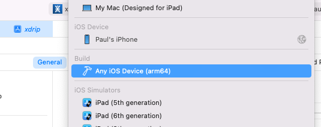
Next we should go to the top menu and chose Archive
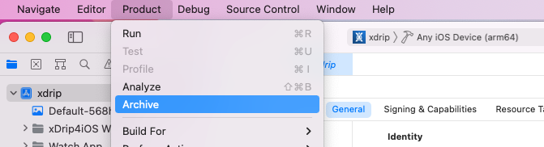
The archiving process can take a few minutes.
Upload the Archive⌁
When the build process has completed, the following screen should open up, select Distribute App
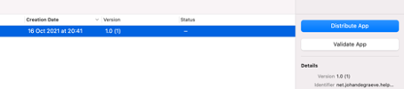
In the next screen, App Store Connect is selected by default, select Next
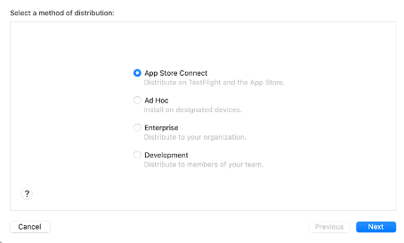
In the next screen, Upload is selected by default, select Next
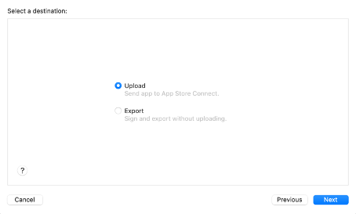
In the next screen, you should give your app a "new" name for Testflight. Please keep the name exactly as it is and just add "_" followed by your initials. Again, please do not modify the actual app name, format or case. Just add your initials to the end.
For example. If your name was James Hetfield, your app name should be xDrip4iOS_JH
If you name was Paul McCartney, your app name should be xDrip4iOS_PC
Now, set the primary language to English and click Next (note: you will have your own unique SKU - don't change it!)
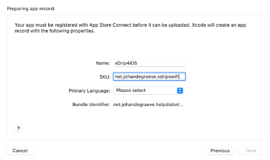
If you still get an error because there is another xDrip4iOS_JH, then just put _JH1.
In the next screen, click Next
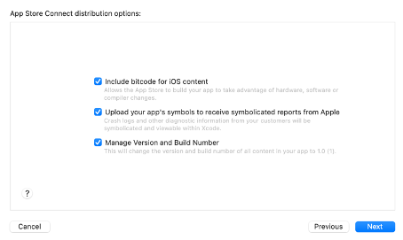
In the next screen, click Next (this example screenshot is for another app)
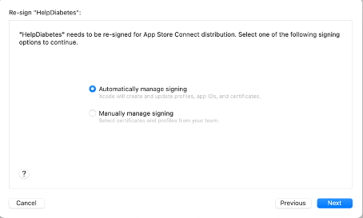
In the next screen, click Upload (this example screenshot is for another app)
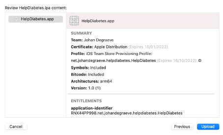
Wait until uploading is finished (this example screenshot is for another app)
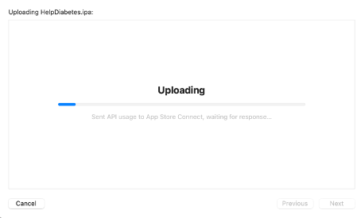
You should see this screen when uploading is finished (this example screenshot is for another app)
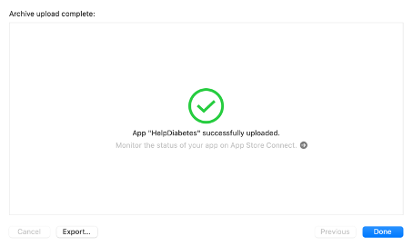
Adding Users⌁
Now we have successfully uploaded the archive file to App Store Connect. You'll need to wait for a short time whilst the file is processed. You'll get an e-mail when processing is completed (it usually takes around 10 minutes).
Log into App Store Connect
Select Users and Access
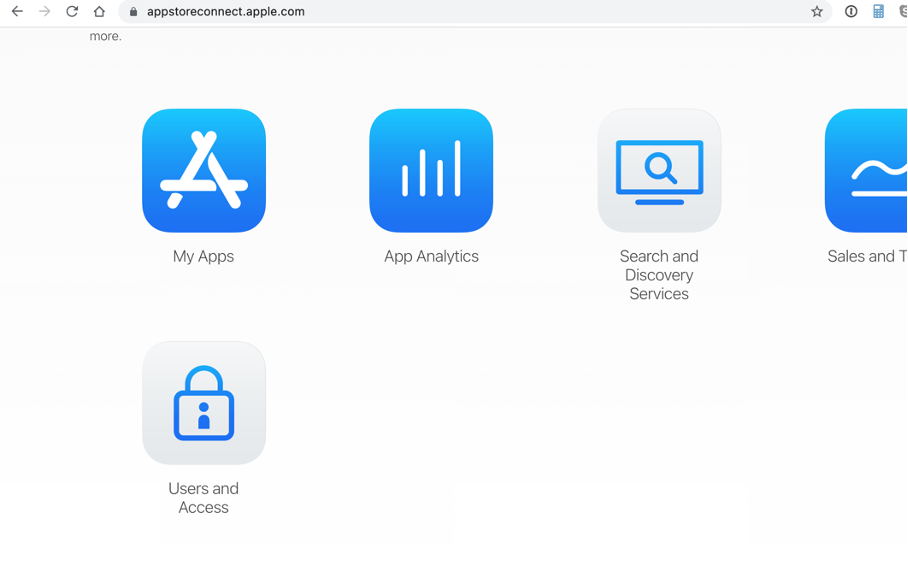
We must select the type of role that we want to assign to the new user. It isn't too important as our only aim is to give them access to test the app. As an example we will select Customer Support as the user type that we're going to add.
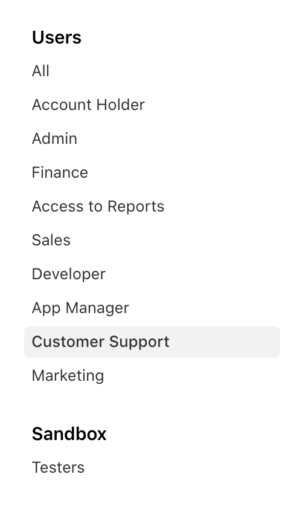
Please note that there is a limit (around 50) to how many users we can add with each role type. As an example, we would add the first 40 users as Customer Service, 40 more as Marketing, then the last 20 as Finance etc.
Click the "+" symbol to add a new user
Fill in the First name, Last name and email address (this must be their Apple ID) of the new tester you want to add and click Invite.
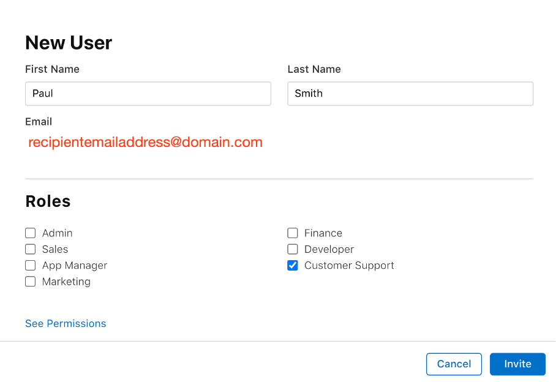
Ask the User to Accept The Invitation⌁
The recipient (in this example, recipientemailaddress@domain.com), will receive an invitation email from Apple.
Ask him or her to check his or her email and to accept the invite.
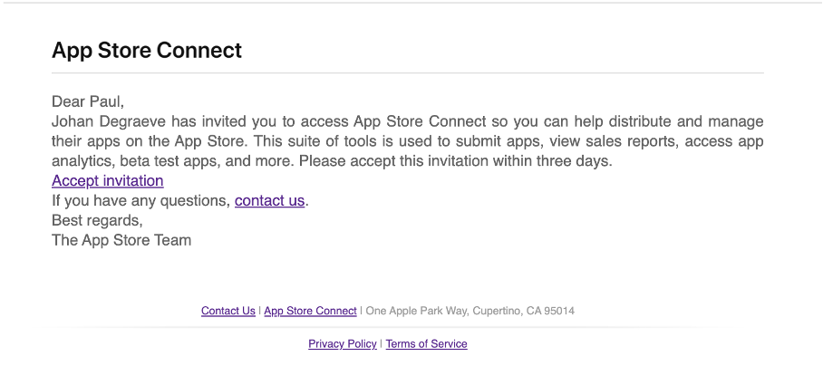
This will open App Store Connect web page (not the app) in a browser window for them. They should confirm that they agree to test your app.
Add User to your App⌁
Now go back to App Store Connect, and select My Apps
Make sure the app xDrip4iOS is selected and click on the TestFlight tab at the top of the page.
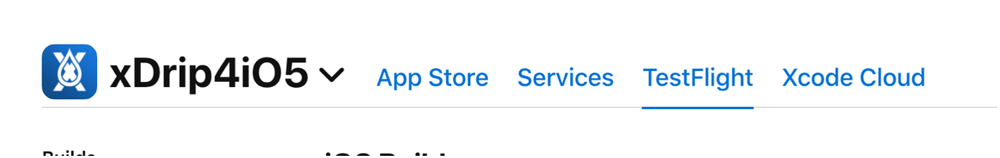
Click Internal Testing -> App Store Connect Users
Click + to add a tester
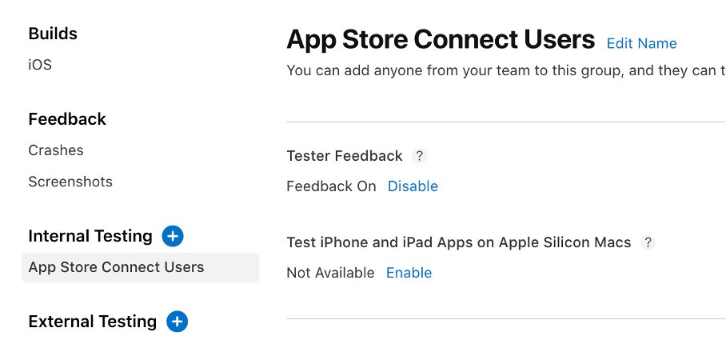
Select the newly added tester from the previous step and you're all done
Do NOT add External Testers
In the Testflight tab of App Store Connect you will see two ways to add testers:
- App Store Connect Users
- External Testers
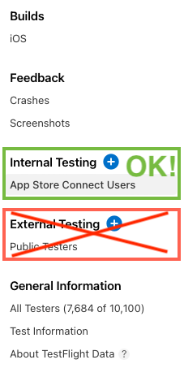
You must only use App Store Connect Users to privately add your users (max 100 users). Do not add any External Testers. This is what you would need to do for a 10,000 user public test and will submit a review of your app by the Apple Review board.
Install from Testflight⌁
The new tester should now install the TestFlight app if they don't already have it (it's available in the regular App Store) on their device and sign in with their Apple ID.
When they open the TestFlight app, they should be able to see your release of xDrip4iOS and install it on their device. Please note that it might take 10-15 minutes for the app to appear in their Testflight. Ask them to be patient.
How do I Update my Release?⌁
Whenever there is an update available to the main branch, please update your local repository and follow these instructions again to archive and upload your release.
Your tester(s) should be informed by a notifiation that a new version is available and it will prompt them to update the app
The process to update a Testflight build is very simple and consists of two operations:
- Update your local code following the update instructions on the build page.
- Upload your updated build to Testflight following the instructions above.
That's it. It really is that simple. Once you do this, as you have kept all previous signing and build settings, the new build will automatically be offered to your personal Testflight users and will directly replace the old app (keeping all settings and data) when they update.
If you do not follow the update instructions and try to manually "hack" things to make them work, you could end up creating a duplicate app.